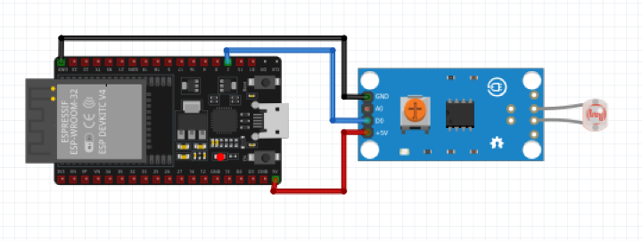

Praktik Modul Sensor Digital MicroPython
Pengenalan & Pembacaan 6 Sensor Digital ESP32
Pelajari cara kerja modul sensor digital (LDR, Getar, IR, Flame, Gas
MQ-2, dan PIR Motion) yang mengubah fenomena fisik menjadi sinyal
logika biner (1
/
0) pada
GPIO 2
menggunakan MicroPython.
Skema Rangkaian ESP32
Sensor DO: GPIO 2 | VCC: 3.3V
Visual Hardware
REAL TIME SIM
PWR
SENSOR MODULE
DO LED
KONDISI GELAP / REDUP
Kondisi Standby / Normal
GPIO 2: 1
STATE: STANDBY
Pilih Modul Sensor MicroPython
6 Sensor Digital
Misi 1: Sensor Cahaya (LDR Digital)
Tugas Kamu: Modul LDR Digital mengeluarkan sinyal 0 (LOW) saat intensitas cahaya terang melebihi ambang batas potensiometer.
misi1_ldr.py
MicroPython (ESP32)
Shell (MicroPython REPL)
MicroPython v1.23.0 on ESP32
Type "help()" for more information.
>>> [REPL Ready. Klik tombol Play (Hijau) di toolbar Thonny untuk menjalankan script]
Type "help()" for more information.
>>> [REPL Ready. Klik tombol Play (Hijau) di toolbar Thonny untuk menjalankan script]
MicroPython v1.23.0 | Sensor Pin: GPIO 2
MicroPython (ESP32) • COM3